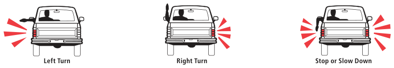
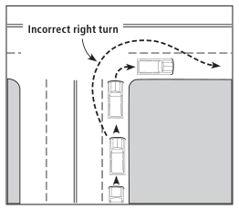
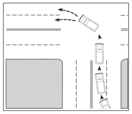
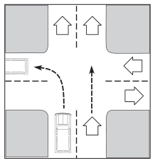
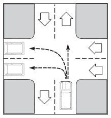

Signaling
A good driver always lets others know if he/she is going to turn or stop. Signaling communicates your intention when driving and helps other drivers around you to plan ahead. A surprise move often results in a crash. Always be alert, watch for others, and give signals for your movements.
Always signal when you are going to:
- Change lanes
- Make a turn
- Pull away from a parking space parallel to the curb
- Slow down or stop
- Enter or leave a highway
- Pull over to the side of the road
How to Signal
You may either use turn signal lights or hand and arm signals. If using hand signals, extend your hand and arm well out of the car window as shown below. Always make sure your signals can be easily seen by others, and signal in plenty of time.
Hand and arm signals are usually difficult to see during non-daylight hours, so it is important to make sure your signal lights are working properly. When signaling a stop, pump your brakes a few times to attract attention.
Signal continuously for at least 100 feet before turning or stopping, and be sure to turn off your signal lights once your turn is complete. Your unintended signal still means “turn” to other drivers.

Left Turn · Right Turn · Stop or Slow Down
Passing
Keep to the Right
Never drive on the left side of the road when:

- Pavement markings or signs prohibit driving on the left (a “No Passing Zone” or solid lane lines)
- There are two or more traffic lanes in each direction
- Within 100 feet of or crossing an intersection or railroad crossing
- On a hill, curve, or any other place where vision is limited
- Within 100 feet of a bridge, viaduct, or tunnel
Always keep to the right side of the road except when:
- Passing another vehicle on a two- or three-lane street
- Driving on a one-way street
- The right side of the road is blocked
Basic Safety Rules When You Are Passing
It is not always safe to pass. Be patient and wait until the time is right. Crashes resulting from improper passing often result in head on crashes and can be deadly.
- Make certain the way is clear.
- Give the proper signal before changing lanes.
- Tap your horn when necessary to avoid surprising the driver ahead.
- Avoid cutting in too quickly if you must return to your original lane.
How to Pass on a Two-Lane Road
- Keep enough distance between you and the car in front of you so you can see ahead clearly. Check the rearview mirror, your side mirrors, and look over your shoulder in your blind spot to make sure the roadway is clear and no other vehicles are passing you. Turn on your left turn signal to alert any drivers behind you.
- Check well ahead for signs and pavement markings for no passing zones, and always check for oncoming traffic in the left lane. Be sure you have enough time and space to overtake the car ahead and return to the right lane before an approaching car comes within 200 feet of you.
- Tap your horn when necessary to alert the driver ahead.
- Pass on the left and do not return to the right lane until you have safely cleared the overtaken vehicle. Wait until you can see the car you have just passed in your rearview mirror before returning to the right lane.
- Turn on your right turn signal and return to the right lane. Be sure to turn your signal off after you have completed the lane change.

Passing on the Right
In Texas, you can pass on the right only when conditions permit you to do so safely.
- The road is clear of parked vehicles or other lane obstructions and is wide enough for two or more lanes in each direction.
- You are on a one-way road.
- You may pass on a paved shoulder when the vehicle you are passing is slowing or stopped on the main traveled portion of the highway, disabled, or preparing to make a left turn.
Do not pass on the right by driving off the paved portion of the highway.
When Another Vehicle is Passing
- Do not increase your speed.
- Stay in your lane.
- Safely move as far to the right as you can when being passed on the left and the lanes are not marked.
- Make it as safe and easy as possible for the other driver to pass you.
Blind Spot Driving
When you are passing, do not drive or linger in the other driver’s blind spot. Either pass the other driver or slow down so you are not in another driver’s blind spot. It is likely the other driver cannot see you if you are in or near their blind spot.

Blind Spot
Turning
Turning a corner appears to be a simple operation. However, many crashes and confusion in traffic are caused by drivers who do not turn properly.
Refer to the diagrams showing the correct method of making right and left turns. There are seven steps in making a safe turn.
- Decide before you get to the turning point. Never make a last minute turn; it is dangerous.
- Look behind and to both sides to see where other vehicles are before you change lanes.
- Move into the proper lane as soon as possible. The faster the traffic is moving, the sooner you should move into the proper lane. If you cannot get into the proper lane within one-half block before turning, do not turn, and continue straight ahead.
- Give the proper turn signal at least 100 feet before you turn. If using a hand signal, hold the signal until you are close enough to the intersection for others to know your intention. Do not hold the signal while making the turn; you need both hands on the wheel.
- Slow down to a reasonable turning speed prior to making the turn. Don’t use the brake or clutch while turning.
- To properly execute the turn, stay in the proper turn lane at all times. Make the turn correctly. This will be easy if you are in the proper lane and proceeding slowly enough at the time you begin to turn.
- Finish the turn in the proper lane.
How to Make a Right Turn
- Signal for a lane change well ahead of the turning point. When it is safe, move your vehicle to the far right lane.
- Use your right turn signal and slow down at least 100 feet from the corner.
- Look both ways before starting to turn.
- Keep as close as possible to the right edge of the road.
- Turn using both hands on the wheel.

Incorrect right turn
How to Make a Left Turn
- Well ahead of the turning point, signal for a lane change. When it is safe, move into the center lane.
- Use the left turn signal and slow down at least 100 feet from the corner.
- Look in all directions before starting to turn. Stay to the right of the center line as you enter the intersection. Yield the right-of-way to any vehicle approaching from the opposite direction.
- To complete a left turn you should turn to the right of the center line of the road into which you are turning by entering the lane in which you will interfere the least with other traffic.
- Once you have completed your left turn, you may signal and change lanes if necessary.

Making a Left Turn From a One-Way Onto a Two-Way Street
If you are turning left from a one-way street you should turn from the left lane into the right lane, moving in the same direction.

Making a Left Turn From a Two-Way Onto a One-Way Street
If you are turning left onto a one-way street, enter the street in the lane in which you will interfere the least with other traffic.

Other Turning Procedures
Watch for pavement markings and signs that:
- Permit turning right or left from or into two or more traffic lanes
- Give other special turning or lane information